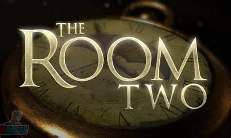
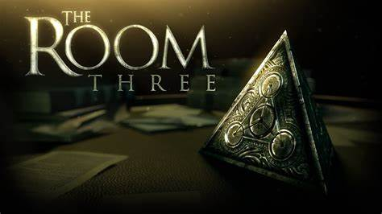
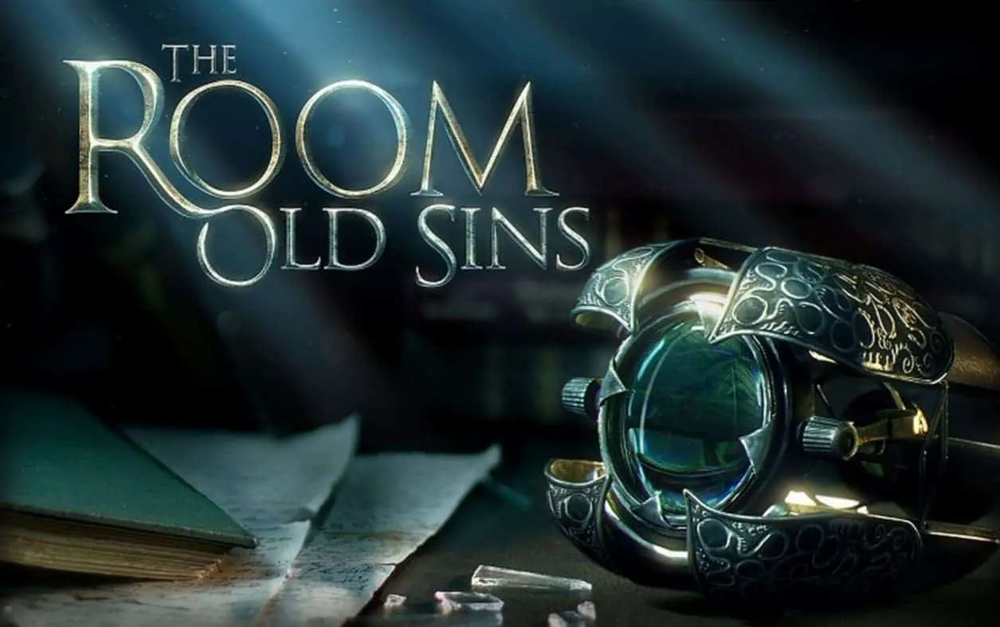

No game The Room, para dispositivos Android e iOS, o jogador é apresentado a um misterioso quarto cheio de cofres antigos. O objetivo do jogo é utilizar os itens disponíveis para tentar resolver os quebra-cabeças e descobrir o que está dentro dos cofres. Depois de receber um bilhete enigmático, o jogador deve desvendar os segredos do quarto sombrio. Munido de uma chave e um monóculo, o usuário pode explorar o ambiente movendo os dedos sobre a tela.
Com um design 3D elegante, o jogo envolve o usuário em uma atmosfera digna de antigas histórias de detetive. O bilhete avisa que ao final do desafio o joga dor vai descobrir um tesouro: “Disseram que nunca poderia ser criada. Ela é a única existente e também a chave para um poder inexplicável”. Qual será esse objeto secreto tão interessante e poderoso? Explorando o quarto, o usuário vai encontrar chaves, fechaduras escondidas e pistas para desvendar códigos e descobrir entradas no cofre.
Apesar de apresentar certa dificuldade, o jogo é bastante intuitivo. Quando o usuário tem problemas para matar a próxima charada, o aplicativo dá até três dicas para ajudar. Os mistérios começam com uma pequena carta incitando a curiosidade do jogador. Nela, encontramos uma chave colada que leva ao monóculo. A primeira parte de The Room é um tutorial explicativo. Em seguida, o jogador está por conta própria. The Room ganhou diversos prêmios, entre eles, o de jogo do ano de 2012, prêmio concedido pela própria Apple a um seleto grupo de jogos.
The Room Two é a sequência do aclamado puzzle para iOS que mistura investigação e quebra-cabeça. O game se destaca pela forma de interação inovadora que imita a realidade. Neste novo game, jogadores estão mais uma vez presos em uma sala com estranhos artefatos da era vitoriana. A novidade de The Room Two é que agora são várias caixas e enigmas para resolver ao mesmo tempo.
The Room 3 é um jogo de quebra-cabeças desenvolvido pela Fireproof Games. Ele apresenta quebra-cabeças intricados e desafiadores ambientados em um mundo misterioso cheio de segredos para descobrir. Com gráficos impressionantes e uma história imersiva, os jogadores devem resolver uma série de quebra-cabeças cada vez mais complexos para descobrir a verdade por trás da trama enigmática do jogo.
Em The Room Three, finalmente conhecemos o arquiteto das caixas cheia de enigmas. Já em Old Sins, a história é aprofundada ao redor do arquiteto. Mas apenas da história, quem gosta de puzzle vai curtir o quarto jogo. O foco em enigmas é mais, assim como foi nos dois primeiros games da franquia.
